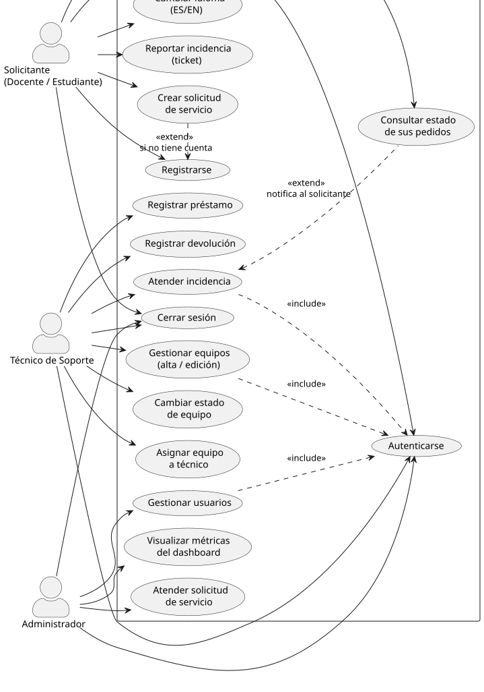
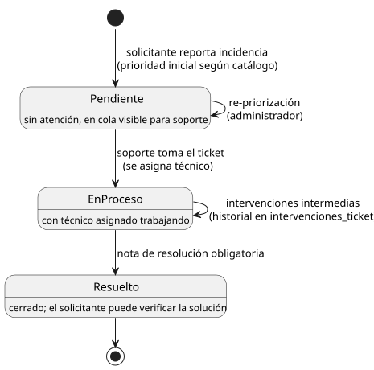
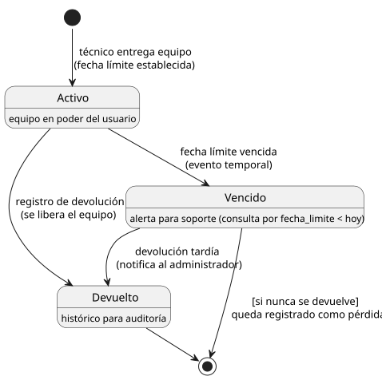

SGRSI · PixelMindSistema de Gestión de Recursos y Soporte de Informática
La segunda entrega (diseño y métricas) no reemplaza a la primera (relevamiento y planificación): se construye sobre ella. Cada sección de la 2ª entrega valida, modela o mide algo que se definió en la 1ª. Este documento las presenta en un solo hilo conductor.
Se aplicaron técnicas de recolección de información vistas en el curso para capturar la realidad del instituto: cómo se registran hoy los equipos, las fallas y los préstamos, y qué necesita cada actor.
| Técnica | Objetivo | Resultado clave |
|---|---|---|
| Entrevista semi-estructurada | Conocer el flujo actual de soporte con el personal del laboratorio. | El registro hoy es manual (planillas/planillas de cálculo), sin trazabilidad. |
| Observación directa | Ver cómo se asignan y mueven los equipos en el día a día. | No hay control de disponibilidad ni de fechas de devolución. |
| Cuestionario a docentes | Relevar frecuencia y tipo de incidencias reportadas. | Las fallas se avisan por mail/verbal y se pierde el historial. |
Se diseñó un formulario específico de captura de datos (técnica de cuestionario) con secciones de identificación del respondente, necesidades por laboratorio, equipos críticos y frecuencia de incidencias; fue la base del alcance de la especificación de requerimientos (sección A4).
| Factibilidad | Análisis | Veredicto |
|---|---|---|
| Técnica | Stack conocido por el equipo (PHP 8 + MySQL + Bootstrap); arquitectura de 3 capas, homologada con la cursada. | Alta |
| Económica | Software libre y sin licencias; XAMPP y Ubuntu Server sin costo; servidor del laboratorio disponible. | Alta |
| Operativa | Personal de soporte existente en el instituto; interfaz simple para roles no técnicos. | Alta |
| Legal | Tratamiento de datos personales (cédulas) y cumplimiento de estándares AGESIC para el estado. | Media |
| Temporal | Tres entregas con plazos fijados por la letra; riesgo de carga académica paralela. | Media (ver plan de riesgos R2) |
| Categoría | Factor | Peso | Estrategia |
|---|---|---|---|
| Fortalezas | Dominio claro del stack LAMP y del modelo incremental. | 5 | Usar el buen dominio técnico para reducir deuda en los módulos núcleo (inventario/tickets). |
| Equipo estable y comunicado desde la 1ª entrega. | 4 | ||
| Oportunidades | Software libre + soporte institucional (tutoría UTULab). | 5 | Aprovechar la tutoría para validar Kanban y CPM/PERT antes de cada entrega. |
| Plataforma web accesible desde cualquier equipo del instituto. | 3 | ||
| Debilidades | Poca experiencia en endurecimiento de seguridad. | 4 | Elevar la seguridad a riesgo formal del proyecto (R5 en 2ª entrega) y destinar sesión de revisión por módulo. |
| Tiempo limitado por carga académica paralela. | 3 | ||
| Amenazas | Sobre-alcance: tentación de agregar funciones fuera de la letra. | 4 | Definir criterio de «terminado» por incremento y diferir mejoras al backlog de la 3ª entrega (riesgo R7). |
| Disponibilidad del laboratorio para demostraciones. | 3 |
Alcance: plataforma web que centraliza inventario de equipos, incidencias (tickets), préstamos, solicitudes de servicio y gestión de usuarios, con control de acceso por roles. Fuera de alcance: gestión económica, reportes avanzados de BI (diferidos).
Actores del sistema: Administrador (configura y gestiona usuarios), Soporte técnico (inventario, tickets, préstamos) y Solicitante/docente (reporta incidencias y solicita préstamos/servicios). Esta clasificación de actores es la que la 2ª entrega reutiliza en los casos de uso (CU-01 a CU-06).
| Código | Requerimiento funcional |
|---|---|
| RF-01 | El sistema debe permitir autenticar usuarios por email/contraseña y controlar el acceso por rol (RBAC). |
| RF-02 | El sistema debe gestionar el inventario de equipos: alta, edición, detalle, estados e historial. |
| RF-03 | El sistema debe permitir reportar y atender incidencias (tickets) con prioridad, intervenciones e historial. |
| RF-04 | El sistema debe registrar préstamos de equipos con verificación de disponibilidad, fecha límite y devolución. |
| RF-05 | El sistema debe gestionar solicitudes de servicio con tipo, laboratorio, fecha de necesidad y cierre con respuesta. |
| RF-06 | El sistema debe administrar usuarios y roles (alta, edición, desactivación) sin perder historial. |
| Código | Requerimiento no funcional | Criterio |
|---|---|---|
| RNF-01 | Seguridad | Contraseñas con hash bcrypt, sentencias preparadas, sanitización de salida, CSRF. |
| RNF-02 | Usabilidad | Diseño responsive y navegación por módulos clara para roles no técnicos. |
| RNF-03 | Rendimiento | Respuestas de página bajo 2 s en la red del instituto. |
| RNF-04 | Portabilidad | Despliegue en XAMPP (local) y Ubuntu Server (producción) sin cambios de código. |
| RNF-05 | Mantenibilidad | Arquitectura en 3 capas y esquema normalizado 3FN documentado. |
La lógica de negocio se modeló con árbol y tabla de decisión para los procesos críticos. Ejemplo — préstamo de un equipo:
¿El equipo está disponible? ──no──▶ Rechazar con mensaje (sugerir reserva)
└─ sí ──▶ ¿El solicitante está acreditado (rol/docente)? ──no──▶ Rechazar
└─ sí ──▶ ¿Fecha de devolución válida y dentro del plazo? ──no──▶ Rechazar
└─ sí ──▶ Crear préstamo activo y marcar equipo "prestado"
| Condición 1 Equipo disponible | Condición 2 Solicitante acreditado | Condición 3 Devolución válida | Acción |
|---|---|---|---|
| Sí | Sí | Sí | Crear préstamo activo; equipo → prestado |
| Sí | Sí | No | Rechazar: fecha fuera de plazo |
| Sí | No | — | Rechazar: solicitante no acreditado |
| No | — | — | Rechazar: sin disponibilidad |
Se eligió el modelo de desarrollo incremental (ciclo de vida tradicional): cada entrega académica coincide con un incremento funcional evaluable, intercalando especificación, diseño e implementación, según Sommerville (2011). El sistema se entrega por partes operativas: login+roles → inventario/tickets/préstamos/solicitudes → testing y métricas.
Reglas internas del grupo (paradigma de conformación, en coordinación con tutoría UTULab): roles fijos, reunión semanal de avance, todo trabajo con commit convencional y revisión por pares antes de merge.
Gestión de tareas con Kanban compartido: columnas Backlog → Por hacer → En curso → En revisión → Hecho, con definición de «terminado» por incremento.
Cronograma de la 1ª entrega (Gantt) y CPM/PERT:
| Actividad (incremento 1) | S1 | S2 | S3 | S4 | S5 | S6 | S7 | S8 |
|---|---|---|---|---|---|---|---|---|
| Relevamiento y formularios | ||||||||
| Factibilidades y FODA | ||||||||
| Especificación de requerimientos (IEEE 830/AGESIC) | ||||||||
| Lógica del sistema (árboles y tablas) | ||||||||
| Modelo de desarrollo y fundamentación | ||||||||
| Planificación: Kanban, Gantt y CPM/PERT | ||||||||
| Repositorio Git + carga documental (crítico) |
CPM/PERT: la red muestrea las precedencias; el camino crítico es Relevamiento → Requerimientos → (Diseño BD) → Documentación → Entrega, con holgura en las actividades periféricas (Kanban no bloquea la entrega final). El análisis se reutiliza en la 2ª entrega para calcular la holgura real del incremento 2.
Contrastando la realidad del proyecto contra los criterios habituales de selección de proceso (Sommerville, caps. 2 y 22), el modelo incremental sigue siendo el adecuado y no se reemplaza. La revisión deriva tres mejoras: formalización del diseño UML por incremento, gestión explícita de riesgos y seguimiento cuantitativo con Gantt.
| Criterio | ¿Sigue favoreciendo al incremental? |
|---|---|
| Estabilidad de requisitos (letra por entregas) | Sí: absorbe ajustes redefiniendo el próximo incremento. |
| Necesidad de entregas tempranas (evaluación docente) | Sí: cada incremento entrega software operativo. |
| Equipo pequeño (3) sin procesos pesados | Sí: evita burocracia de cascada puro o RUP completo. |
| Riesgo de degradar la arquitectura acumulando incrementos | Mitigado: arquitectura de 3 capas estable desde el inicio (B5). |
Describe qué hace el sistema con independencia de la tecnología: modelo ambiental (las entidades del entorno con que intercambia fenómenos), lista de acontecimientos y modelo de comportamiento (los ciclos de vida).
| # | Tipo | Acontecimiento | Respuesta del sistema |
|---|---|---|---|
| A1 | Externo | Un usuario ingresa sus credenciales. | Valida contra hash bcrypt, abre sesión con su rol o rechaza con mensaje genérico. |
| A2 | Externo | Una persona se registra por primera vez. | Crea cuenta con rol solicitante, valida email único y contraseña segura. |
| A3 | Externo | Soporte da de alta un equipo. | Genera código, registra tipo/marca/modelo/serie, estado inicial «disponible». |
| A4 | Externo | Soporte cambia el estado de un equipo. | Actualiza estado (mantenimiento/baja); la baja cierra la asignación activa. |
| A5 | Externo | Se solicita el préstamo de un equipo. | Verifica disponibilidad, crea préstamo activo con fecha límite y marca «prestado». |
| A6 | Temporal | Vence la fecha límite de un préstamo. | El préstamo pasa a «vencido» y queda como alerta para soporte. |
| A7 | Externo | El solicitante reporta una incidencia. | Crea ticket pendiente con prioridad, visible para soporte. |
| A8 | Externo | Soporte toma y trabaja una incidencia. | Pasa a «en proceso», asigna técnico y registra intervenciones. |
| A9 | Externo | La incidencia queda resuelta. | Exige nota de resolución, cierra el ticket y registra fecha/hora. |
| A10 | Externo | Se recibe una solicitud de servicio. | Crea solicitud pendiente con tipo, laboratorio y fecha de necesidad. |
| A11 | Externo | Soporte/administrador atiende la solicitud. | Pasa a «en proceso»; al finalizar, registra respuesta obligatoria y cierre. |
| A12 | Externo | El administrador gestiona un usuario. | Alta/edición de usuarios y roles; desactivación sin borrar historial. |
| A13 | Externo | El usuario cierra sesión o expira la inactividad. | Destruye la sesión y redirige al login. |

| Código | Caso de uso | Actor primario | Sucesos de la planilla |
|---|---|---|---|
| CU-01 | Autenticarse | Todos | Precondición cuenta activa; postcondición sesión con rol; alternativas: credenciales inválidas, cuenta desactivada. |
| CU-02 | Reportar incidencia (ticket) | Solicitante | Completa título, descripción, prioridad y equipo opcional; flujo alternativo: reportar sin equipo asociado. |
| CU-03 | Atender incidencia | Soporte | Toma ticket, registra intervenciones, exige nota de resolución para cerrar. |
| CU-04 | Registrar préstamo de equipo | Soporte | Aplica el árbol/tabla de decisión de A5; rechazo exige justificación. |
| CU-05 | Crear solicitud de servicio | Solicitante | Ingresa tipo, laboratorio y fecha de necesidad; validaciones de campos. |
| CU-06 | Atender solicitud de servicio | Soporte/Administrador | Registra respuesta obligatoria; no se puede cerrar con respuesta vacía. |






| ID | Riesgo | Categoría | Prob. | Impacto | Mitigación |
|---|---|---|---|---|---|
| R1 | Deserción/ausencia prolongada de un integrante (equipo de 3). | Personal | Media | Alto | Código comentado, pareo rotativo: evitar «bus factor» 1. |
| R2 | Falta de tiempo por carga académica en exámenes. | Proyecto | Alta | Medio | Cronograma con holgura, tareas pequeñas, revisión semanal. |
| R3 | Pérdida de datos/código por falla del equipo. | Técnico | Baja | Alto | Git remoto + respaldo periódico del volcado MySQL. |
| R4 | Cambios de requisitos entre entregas. | Negocio | Media | Medio | Modelo incremental: se re-planifica el siguiente incremento. |
| R5 | Vulnerabilidades (inyección, XSS, acceso no autorizado). | Técnico | Media | Alto | Sentencias preparadas, escapado de salida, RBAC, bcrypt, CSRF. |
| R6 | Inconsistencia del esquema entre entornos locales. | Técnico | Media | Medio | ddl.sql/dml.sql versionados como única fuente. |
| R7 | Sobre-alcance (agregar funciones fuera de la letra). | Proyecto | Media | Medio | Definición de «terminado» por incremento; backlog diferido. |
| R8 | Indisponibilidad del laboratorio para demostraciones. | Negocio | Baja | Medio | XAMPP portable en notebook alternativa. |
| Actividad (incremento 2) | S1 | S2 | S3 | S4 | S5 | S6 | S7 | S8 | S9 |
|---|---|---|---|---|---|---|---|---|---|
| Validación metodológica | |||||||||
| Modelo esencial | |||||||||
| Casos de uso + planillas | |||||||||
| Clases y estados | |||||||||
| Paquetes | |||||||||
| Riesgos y contingencia | |||||||||
| Gantt 2ª entrega y sincronización Git |